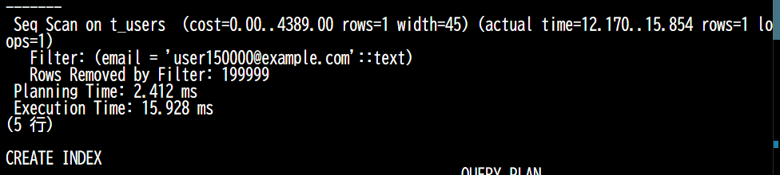
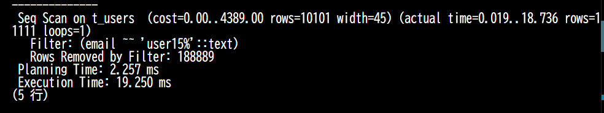
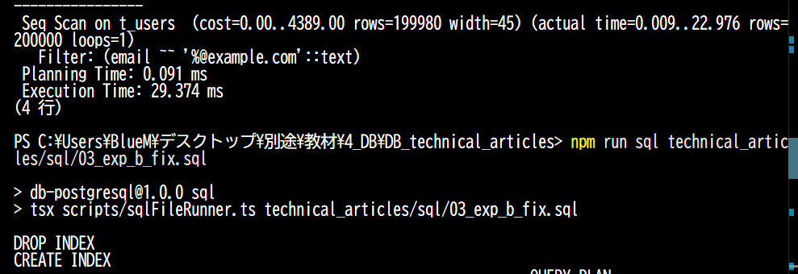
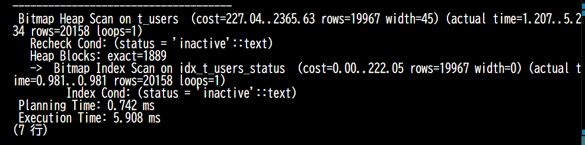
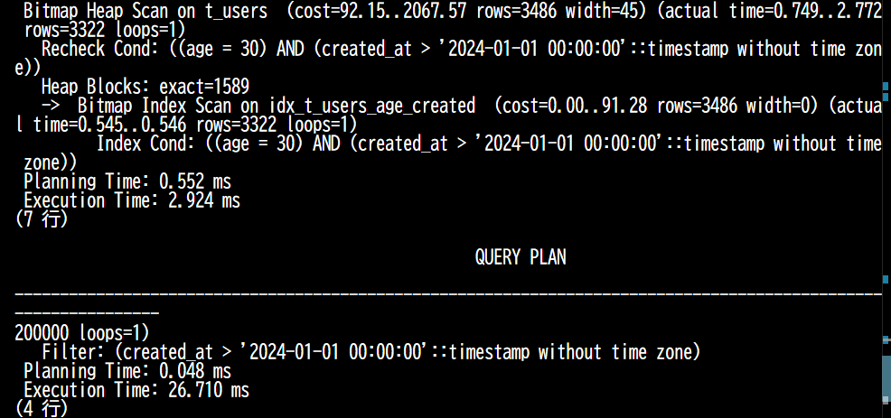

データベース工学の講義を通じて、私たちはSQLの基本からテーブル設計まで多くのことを学んできました。しかし、実際のシステム開発においてデータ量が数万、数十万と増えてくると、「正しいSQLを書いているのに、結果が返ってくるまでに何秒もかかる」という問題に直面します。
このパフォーマンス問題を解決する鍵となるのがインデックス設計です。本記事では、講義の演習環境を使用し、実際に手を動かしながら以下のゴールを目指します。SQLの構文を少し忘れてしまった方でも大丈夫なように、適宜解説を挟みながら進めます。
EXPLAIN / EXPLAIN ANALYZE を使い、クエリの実行計画とインデックスの効果を測定できる本記事の SQL は、以下の環境で動作確認を行っています。読者の皆さんも、自身の環境で実際に手を動かしながら読み進めてください。
5432（PostgreSQLのデフォルトポート）を使用している別のプロセスがある場合、コンテナの起動に失敗する可能性があります。その場合はポート番号を変更してください。psql -U (ユーザー名) -d (データベース名) -h localhost 等のコマンドを実行し、確実にデータベースに接続できていることを確認してから実験に進んでください。=> や =#）が表示され、SQLの入力待ち状態になります。
$ psql -U postgres -d postgres -h localhost
Password for user postgres: (パスワードを入力してEnter)
psql (17.6)
Type "help" for help.
postgres=# 本記事の実験では、以下のような t_users（ユーザー情報）テーブルを用います。
-- ユーザー情報を格納するテーブルの作成
CREATE TABLE t_users (
id serial PRIMARY KEY, -- serial: 自動採番される整数型。PRIMARY KEY: 主キー
email text NOT NULL, -- text: 文字列型。NOT NULL: 空(NULL)を許容しない
age int NOT NULL, -- int: 整数型
status text NOT NULL, -- 状態を表す文字列（後ほど active/inactive を入れます）
created_at timestamp NOT NULL -- timestamp: 日時型（登録日時）
);第6章の実験では、このテーブルにダミーデータを20万件挿入して検証を行います。
データベースにおけるインデックスとは、テーブル内のデータを高速に検索するための「索引（さくいん）」データ構造のことです。分厚い技術書から特定のキーワードを探すとき、全ページを1枚ずつめくる（全件走査）のは非常に時間がかかります。そこで、巻末の「索引」を見て、そのキーワードが載っているページ番号を特定してから該当ページを開くはずです。データベースのインデックスも全く同じ役割を果たします。
そしてインデックス設計とは、「よく使われるクエリに対して、どのテーブルのどの列に、どのような種類のインデックスを作成するか」を決定する作業です。目的は、検索・結合・並べ替え・集計などの処理コストを劇的に下げることにあります。
PostgreSQLにおいて、明示的に種類を指定せずにインデックスを作成した場合、標準でB-tree（Balanced Tree）というデータ構造が採用されます。
図: B-treeの基本構造（木が浅く保たれ、データへのアクセス経路が整理されている）
B-treeは、ルート（根）ノードからブランチ（枝）ノードをたどり、目的のデータ（またはデータへのポインタ）が格納されているリーフ（葉）ノードへ到達する階層的な木構造になっています。
B-treeには、リレーショナルデータベースで標準採用されるだけの強力な性質がいくつかあります。
id = 30 のデータ」といった等値検索だけでなく、「id BETWEEN 20 AND 40」のような範囲検索や、ORDER BY のような並べ替え処理を高速化するのにも劇的な効果を発揮します。「そんなに便利なら、すべての列にインデックスを作ればいいのではないか？」と思うかもしれません。しかし、インデックスには明確なトレードオフ（一方を追求すると、もう一方が犠牲になる関係）が存在します。
前述の通り、インデックスは常にデータがソートされ、木のバランスが保たれた状態を維持しなければなりません。そのため、テーブルに対して INSERT（追加）, UPDATE（更新）, DELETE（削除）が行われるたびに、データベースは裏側でインデックスの木構造も律儀に並べ替えて更新しています。
つまり、データの読み取り（SELECT）を劇的に高速化する代わりに、データの書き込み処理が遅くなり、さらにインデックス自体を保存するためのディスク容量も余分に消費することになります。これがインデックスを「本当に必要な列にだけ絞って作る」べき最大の理由です。
PostgreSQLにはB-tree以外にも用途に応じたインデックスが用意されています。知識として整理しておきましょう。
=）、範囲検索（<, >, BETWEEN）、ORDER BY に強い。実務のインデックスの9割以上はこれを使用します。
第2章で述べた通り、インデックスには「読み取りが速くなる代わりに、書き込みが遅くなる」という強いトレードオフがあります。そのため、適当な列に手当たり次第インデックスを貼る（オーバーインデックス）と、システム全体のパフォーマンスが逆に悪化してしまいます。
そこで、「どの列にインデックスを作るべきか」を見極めるためのシステム的なアプローチが必要になります。実務において必ず意識すべき「4つの基本原則」を以下に示します。後述する実験パートでは、これらの法則が本当に正しいのかを実際に手を動かして検証していきます。
WHERE, JOIN, ORDER BY 句に頻繁に登場する列を特定することから始めます。
SELECT をインデックス化するのは不可能です。新しく追加する際は、必ず実測（EXPLAIN ANALYZE等）で効果を確認してから本番環境に適用します。
実験に入る前に、PostgreSQLがどのようにクエリを実行しようとしているかを確認する EXPLAIN（エクスプレイン）コマンドについて解説します。
いつもの SELECT 文の先頭に EXPLAIN ANALYZE というキーワードをつけるだけで、ターミナル上に以下のような「実行計画（データベースの作戦内容）」が出力されます。
▼ターミナルに表示される実行計画の例
# EXPLAIN ANALYZE SELECT * FROM t_users WHERE email = 'test@example.com';
QUERY PLAN
---------------------------------------------------------------------------------------------------------------------
Index Scan using idx_t_users_email on t_users (cost=0.42..8.44 rows=1 width=45) (actual time=0.031..0.032 rows=1 loops=1)
Index Cond: (email = 'test@example.com'::text)
Planning Time: 0.150 ms
Execution Time: 0.051 ms
(4 rows)この結果画面から、以下のポイントを読み取ります。ここを見比べることで、インデックスが本当に仕事をしているかがわかります。
Seq Scan と書かれていたら、インデックスが使われず、テーブルを先頭から全件走査している証拠です（遅い）。Index Scan または Bitmap Index Scan と書かれていたら、無事にインデックスを使って効率よく検索できています（速い）。ANALYZE を付けた場合のみ表示される、実際の実行時間（ミリ秒単位）です。チューニングによってここが何ミリ秒減ったかを確認します。ここからは、実際にコンテナ環境を用いて検証を進めます。順を追ってSQLを実行し、手元の環境でどのような結果が出たかを記録していきましょう。
インデックスの様々な挙動を確かめるため、20万件のダミーデータを作成します。ここでポイントとなるのは、status 列に意図的に「activeが90%、inactiveが10%」という偏りを持たせている点です。
20万件のデータ生成には数秒〜十数秒かかる場合があります。クエリの実行が完了し、プロンプトが戻ってくるまで待機してください。
-- 既にテーブルがあれば削除（何度でも実験をやり直せるようにするため）
DROP TABLE IF EXISTS t_users;
-- テーブルの作成
CREATE TABLE t_users (
id serial PRIMARY KEY,
email text NOT NULL,
age int NOT NULL,
status text NOT NULL,
created_at timestamp NOT NULL
);
-- 20万件のダミーデータを自動生成して挿入するクエリ
INSERT INTO t_users (email, age, status, created_at)
SELECT
-- 例: 'user1@example.com' のように連番付きのアドレスを作る
'user' || i || '@example.com',
-- random()は0.0〜1.0の小数を返す。それに60を掛けて18を足し、18〜77歳の年齢を生成
(random() * 60)::int + 18,
-- 乱数が0.9未満なら 'active'、それ以外なら 'inactive' にする（90%と10%の偏り）
CASE WHEN random() < 0.9 THEN 'active' ELSE 'inactive' END,
-- 現在時刻(now())から、ランダムな日数（最大365日）を引いて過去の日付を作る
now() - (random() * interval '365 days')
-- generate_series(1, 200000) で 1〜20万 までの連番 'i' を発生させる
FROM generate_series(1, 200000) AS s(i);
想定シーン： Webサービスのログイン画面で、ユーザーが入力したメールアドレスをもとに、20万件の会員データベースから該当する1件のユーザー情報を探し出す。
検証の狙い： インデックスがない場合（Seq Scan）と、作成した場合（Index Scan）で、検索速度にどれほどの劇的な差が生まれるかという「基本原則1」の裏付けとなる効果を実証します。
以下のクエリを実行し、インデックス作成前後で Seq Scan から Index Scan にどう変化したかを確認します。
-- ① インデックス作成前の検索
EXPLAIN ANALYZE SELECT * FROM t_users WHERE email = 'user150000@example.com';
-- ② インデックスの作成
CREATE INDEX idx_t_users_email ON t_users (email);
-- ③ インデックス作成後の検索
EXPLAIN ANALYZE SELECT * FROM t_users WHERE email = 'user150000@example.com';▼実際のターミナル出力結果
Seq Scan から Index Scan に変化し、実行時間は 15.928 ms から 0.090 ms へと約177倍も高速化されました。また、Seq Scan時は Rows Removed by Filter: 199999（関係ない19万件のデータを無駄に読み込んで捨てた）と出力されており、全件走査の非効率さが明確に現れています。
想定シーン： 管理画面で特定の文字列を含むメールアドレスを持つユーザーを検索する際、「user15から始まるアドレス（前方一致）」と、「@example.comで終わるアドレス（後方一致）」をそれぞれ検索する。
検証の狙い： B-treeインデックスは辞書順にデータが並んでいるため、「前方一致」ならインデックスが効き、「後方一致」では効かないことを実証します。さらに、本講義のコンテナ環境（日本語ロケール）特有の「罠」とその解決策も提示します。
実験Aで作成したインデックスがある状態で、前方一致検索を実行してみます。
-- 'user15' から始まるアドレスを検索
EXPLAIN ANALYZE SELECT * FROM t_users WHERE email LIKE 'user15%';▼実際のターミナル出力結果（罠の発生）
【罠の解説】 B-treeは前方一致に強いはずなのに、なぜか Seq Scan （19.250 ms）になってしまいました。実は、PostgreSQLのデータベース言語設定（ロケール）が日本語環境などの場合、文字の並び順ルールが複雑になるため、通常の CREATE INDEX では LIKE 検索にインデックスが使われません。
この罠を回避するため、text_pattern_ops という特殊なオプションを指定してインデックスを再作成し、再度検証します。
-- 既存のインデックスを削除
DROP INDEX idx_t_users_email;
-- LIKE検索用の演算子クラスを指定して作成
CREATE INDEX idx_t_users_email_pattern ON t_users (email text_pattern_ops);
-- ① 再度、前方一致検索を実行する
EXPLAIN ANALYZE SELECT * FROM t_users WHERE email LIKE 'user15%';
-- ② 後方一致検索も実行してみる
EXPLAIN ANALYZE SELECT * FROM t_users WHERE email LIKE '%@example.com';▼実際のターミナル出力結果（解決策と後方一致の限界）
Bitmap Index Scan に切り替わりました。実行計画を見ると、条件が (email ~>=~ 'user15') AND (email ~<~ 'user16') のように「user15以上、user16未満」という範囲検索にPostgreSQL内部で自動翻訳され高速化されています。Seq Scan（29.374 ms）のままでした。電話帳で「末尾が『郎』の人」を探すとき全ページを見なければならないのと同じで、最初の文字が確定していないとB-treeの木はたどれないことが証明されました。
想定シーン： 分析ダッシュボードにて、「退会済みのユーザー（全体の約10%）」と、「現在利用中のユーザー（全体の約90%）」の情報をそれぞれ一覧で取得する。
検証の狙い： 「基本原則2: 選択度を考える」の裏付けです。カーディナリティの低い列（statusなど値の種類が少ない列）にインデックスを貼っても、条件によってPostgreSQLの賢いオプティマイザがあえてインデックスを無視することを確認します。
CREATE INDEX idx_t_users_status ON t_users (status);
-- 少数派（全体の約10%）を検索
EXPLAIN ANALYZE SELECT * FROM t_users WHERE status = 'inactive';
-- 多数派（全体の約90%）を検索
EXPLAIN ANALYZE SELECT * FROM t_users WHERE status = 'active';▼実際のターミナル出力結果
Bitmap Index Scan（5.908 ms）が使われましたが、多数派の検索ではインデックスが存在するのに Seq Scan に逆戻りしました。
想定シーン： カスタマーサポートの画面で、「年齢が30歳 かつ 2024年以降に登録したユーザー」を探し出す。そのために age と created_at の複合インデックスを作成する。
検証の狙い： 「基本原則3: 複合インデックスの順序」の裏付けです。複合インデックスは左側の列から順にソートされるため、第1列（ここではage）の条件を指定しないと、せっかくの複合インデックスが使えないという重要な特性を検証します。
-- age を第1条件、created_at を第2条件として作成
CREATE INDEX idx_t_users_age_created ON t_users (age, created_at);
-- ① 第1列と第2列の両方を使って検索
EXPLAIN ANALYZE SELECT * FROM t_users WHERE age = 30 AND created_at > '2024-01-01';
-- ② 第2列のみを使って検索
EXPLAIN ANALYZE SELECT * FROM t_users WHERE created_at > '2024-01-01';▼実際のターミナル出力結果
Bitmap Index Scan（2.924 ms）となり完璧に機能しました。しかし画像下部の通り、第2列単独での検索は Seq Scan（26.710 ms）となってしまいました。ここまでの実験を通じて、インデックス設計における4つの基本原則が実証されました。
text_pattern_ops を指定しないと LIKE 検索にインデックスが使われないという実務的な罠がある。WHERE 句で第一条件として指定される列を先頭にしなければ効果を発揮しない。ここまでの内容の定着度を確認するため、5つの実践的な問題に挑戦してみてください。難易度は徐々に上がっていきます。
実務の開発現場で「なぜそのクエリが遅いのか？」を突き止めるつもりで、解答例を開く前にぜひ自身の考えをまとめてみてください。
【場面・背景】
社内の会員管理システムで、「退会済みの25歳のユーザー」を抽出し、登録日の新しい順に50件だけ一覧画面に表示する機能を追加することになりました。本記事の t_users テーブルに対して、以下のクエリが発行されます。
SELECT * FROM t_users
WHERE status = 'inactive' AND age = 25
ORDER BY created_at DESC
LIMIT 50;このクエリを最も効率よく高速化したい場合、どの列に、どのような順序で複合インデックスを作るべきでしょうか？
解答： CREATE INDEX idx_users_age_status_created ON t_users (age, status, created_at DESC);
※ (status, age, created_at DESC) でも可
解説： 複合インデックスを設計する際の基本テクニックです。まず、WHERE句の等値検索の対象となっている age と status を先頭に置きます（この2つはどちらが先でも大きな差はありませんが、一般的に値の種類が多い＝選択度が高い age を先にするのがセオリーです）。
さらに重要なのが、ORDER BY のソート条件である created_at DESC をインデックスの末尾に含める点です。これにより、データベースは「ソート済みのインデックス」から条件に合うものを上から50件拾うだけで処理が完了するため、非常に重いソート処理を丸ごとスキップでき、クエリが劇的に高速化します。
【場面・背景】
ECサイトのマイページ機能です。ログイン中のユーザーのメールアドレスをキーにして、そのユーザーの過去の注文履歴（orders テーブル）をすべて取得する画面を作っています。
-- ordersテーブルとusersテーブルを、idをキーにして結合(JOIN)する
SELECT o.*
FROM orders o
JOIN users u ON o.user_id = u.id
WHERE u.email = 'test@example.com';このJOINクエリを高速化するには、どのテーブルのどの列にインデックスが必要でしょうか？（テーブルは2つあります）
解答：
1. CREATE INDEX idx_users_email ON users (email);
2. CREATE INDEX idx_orders_user_id ON orders (user_id);
解説： JOINクエリでは「駆動表（先に読み込まれるテーブル）」と「内部表（後から結合されるテーブル）」の2つの側面からインデックスを考えます。
まず、WHERE 句で絞り込みが行われる users テーブルの email 列にインデックスが必要です。次に、抽出された user の id を使って orders テーブルに結合しに行くため、結合の受け手（内部表）となる orders テーブルの user_id 列（外部キー）にもインデックスが必須となります。「外部キー制約の列には必ずインデックスを貼る」と覚えておきましょう。
【場面・背景】
グローバル展開しているWebサービスのログイン処理です。ユーザーがメールアドレスを入力する際、大文字・小文字を適当に入力してもログインできるように、SQL側で lower() 関数を使ってすべて小文字に変換してから比較する仕様になっています。
※t_users テーブルの email 列には、すでに単一のインデックスが作成済みです。
SELECT * FROM t_users
WHERE lower(email) = 'alice@example.com';実は、このクエリを実行するとインデックスが一切使われず、Seq Scan になってしまいます。なぜインデックスが効かないのでしょうか？また、これを解決するにはどのようなコマンドを実行すべきでしょうか？
解答：
列に対して関数や演算（例: email || '@' や age + 1 など）を適用すると、元のインデックスの木構造（ソート順）と一致しなくなるため、インデックスは無効化されてしまいます。
解決策として、関数の実行結果をあらかじめインデックス化する「式インデックス（関数インデックス）」を作成します。
CREATE INDEX idx_users_lower_email ON t_users (lower(email));
解説： 「インデックスを貼った列は裸のまま（関数の引数に入れたり四則演算したりしない）でWHERE句に書く」というのはSQLチューニングの絶対の鉄則です。どうしても関数を通した結果で検索したい場合は、このように式インデックスを活用します。
【場面・背景】
ニュースメディアのシステムです。トップページに「特定のカテゴリ（category_id = 5）に属する記事のうち、2024年以降に公開されたものを、閲覧数（views）が多い順に10件表示する」という機能を作ります。
SELECT * FROM articles
WHERE category_id = 5
AND published_at >= '2024-01-01'
ORDER BY views DESC
LIMIT 10;このクエリを高速化するために複合インデックスを作ります。category_id を先頭にするのは基本ですが、その後ろの列はどういう順番で指定するのが最もパフォーマンスが良いでしょうか？
解答： CREATE INDEX idx_articles_cat_views ON articles (category_id, views DESC);
解説： 非常にひっかけになりやすい、高度な問題です。「WHERE句の条件を前に持ってくる」というセオリーに従って (category_id, published_at, views DESC) と作りたくなりますよね。しかし、B-treeインデックスは範囲検索（>= など）の条件が現れた時点で、それより右側に定義された列によるソート（ORDER BY）をインデックスだけで処理できなくなります。
そのため、範囲検索の列をあえて後回しにし、「等値検索（=）の列 → ORDER BY の列」の順序で作成し、ソート処理をスキップさせるのがこの場合の正解（最もI/Oコストが下がる設計）となります。
【場面・背景】
巨大なタスク管理（To-Do）アプリのデータベースです。tasks テーブルには1000万件のタスクが保存されていますが、そのうち99%はすでに「完了（status = 'done'）」しており、検索されることは滅多にありません。
アプリケーションで最も頻繁に実行され、かつシステムに負荷をかけているのは、「特定のユーザーの、まだ『未完了（status = 'todo'）』のタスク一覧を取得する」クエリです。
SELECT * FROM tasks
WHERE assignee_id = 123
AND status = 'todo';(assignee_id, status) の複合インデックスを作れば高速化できるのは明らかです。しかし、1000万件すべてをインデックス化するのは、ディスク容量の無駄使いであり、タスク完了時の更新コストも跳ね上がってしまいます。
このケースにおいて、PostgreSQLの機能を使って最も効率的で無駄のないインデックスを作成するコマンドを考えてください。
解答： CREATE INDEX idx_tasks_todo ON tasks (assignee_id) WHERE status = 'todo';
解説： PostgreSQLの超強力な機能である「部分インデックス（Partial Index）」を活用します。インデックスを作成する際、末尾に WHERE 句をつけることで、条件を満たす行（今回は全体の1%しかない未完了タスク）だけをインデックスの木構造に登録することができます。
これにより、インデックスのサイズが劇的に小さくなり、メモリ（RAM）上にも乗りやすくなるため、検索が超高速になります。さらに、99%を占める「完了タスク」が更新・削除されてもこのインデックスはメンテナンスされないため、更新パフォーマンスの悪化も防ぐことができる、まさに一石二鳥のテクニックです。
本記事では、インデックス（索引）自体の役割やB-treeの構造といった理論から入り、実際にPostgreSQLのオプティマイザがどのようにインデックスを選択（あるいは無視）するのかを、講義のDocker環境を用いた実験を通じて確認しました。
インデックス設計は「クエリ中心」で考えることが基本です。推測だけで設計するのではなく、必ず EXPLAIN ANALYZE を用いて「自分の意図通りに Index Scan が使われているか」を検証する癖をつけましょう。そして何より、読み取りを速くする代わりに書き込みコストとストレージ容量増という代償（トレードオフ）を払っていることを常に忘れないでください。
実務のバックエンド開発やデータベース運用において、この「実行計画を読み解き、適切なインデックスを設計する力」は必ず皆さんの強力な武器になります。この記事が、パフォーマンスチューニングの第一歩となれば幸いです。